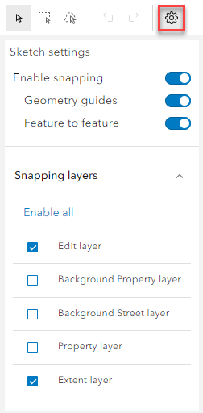

Sketch settings |
Top Previous Next |
|
When you are drawing on the map to create a polygon, ESU or ASD geometry, snapping to the underlying layers is switched on by default. If you click on the Sketch Settings then you may toggle snapping on and off by clicking Enable snapping.  |